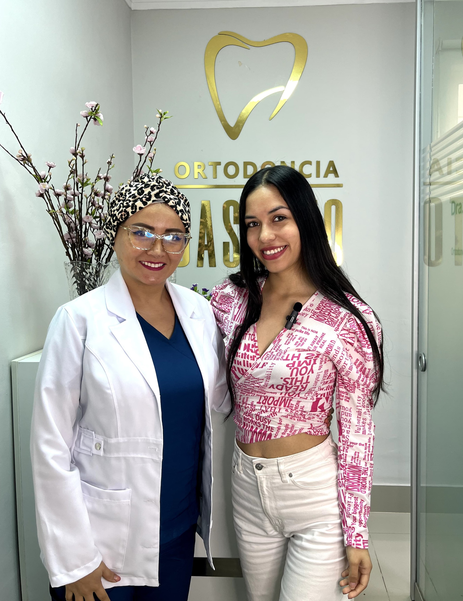

El Corazón de Nuestra Clínica

Dra. Katherine Basurto
Fundadora y Especialista Principal
Con una profunda pasión por la odontología y un compromiso inquebrantable con el bienestar de mis pacientes, fundé esta clínica con un objetivo claro: ofrecer una atención dental de la más alta calidad en un ambiente cálido, moderno y humano.
Creo firmemente que cada sonrisa es única y merece un plan de tratamiento 100% personalizado. Utilizando la última tecnología diagnóstica y terapéutica, mi equipo y yo nos dedicamos a transformar no solo sonrisas, sino también vidas.
Nuestra Filosofía:
- Confianza y Transparencia: Te explicamos cada paso de tu tratamiento.
- Excelencia Clínica: Formación continua y tecnología de vanguardia.
- Atención Personalizada: Tu comodidad y tus objetivos son nuestra prioridad.